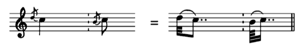

364 Kurzer Vorschlag
스피커(🔊)를 누르면 구글 성우가 읽어줍니다.
Bild: kleine Achtelnote mit durchstrichenem Fähnchen...
🔊
▼
"그림: 사선 꼬리가 달린 작은 8분음표..."
Point
durchstrichenem
은 '선을 그어 지운'이라는 뜻입니다.
...Hals zeigt nach oben; meist mit Bogen zur Hauptnote gebunden;
🔊
▼
"...기둥은 위를 향하고, 대개 이음줄로 주음과 연결됩니다."
Grammar
gebunden
은 '묶다'의 과거분사로, 이음줄로 연결된 상태를 말합니다.
Ausführung: Vorschlagsnote kommt entweder auf die Zählzeit...
🔊
▼
"연주: 꾸밈음은 주음의 박(Zählzeit)에 맞춰 나오거나..."
Expression
entweder ... oder ...
(A 아니면 B) 구문입니다.
...oder erscheint (verbreitet seit etwa 1850) unbetont kurz davor.
🔊
▼
"...또는 (1850년경부터 보편화된 방식으로) 강세 없이 그 직전에 짧게 연주됩니다."
Context
unbetont
(강세 없는)가 핵심입니다.
Notenbeispiel (악보 예시)
